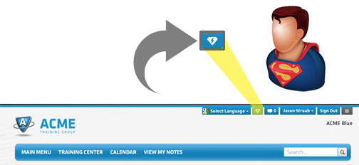
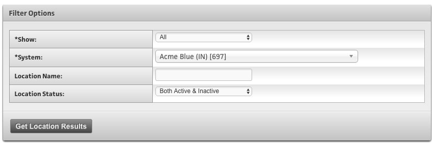
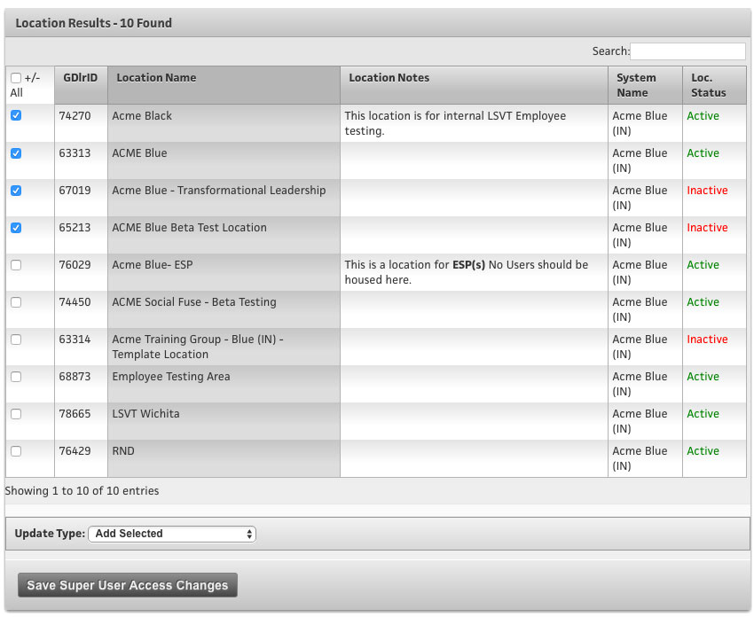
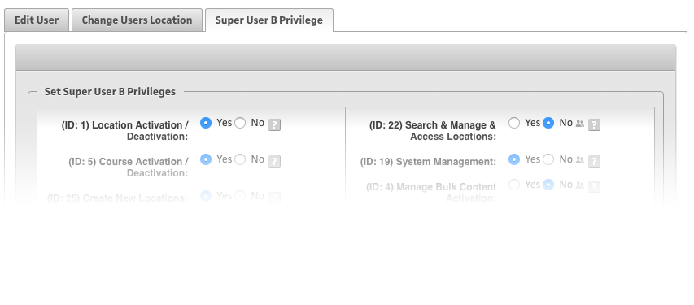

Overview
A Super User is one of the highest levels of access, and it means that you have access to the “Super User Dashboard,” which is where all of the Admin Tools can be found, as well as the reporting features on multiple Locations at once.
Being a “Super User” you will have an extra button in the top nav of every screen (it’s supposed to look like a Super Hero shield... it was a SUPERMAN “S” for a while, but we’d figure we better make it generic before we got an ugly letter from Marvel Comics about it):

If a user is set to an Access Level of “Super User” this really means that they now CAN be granted the ability to have a lot more privileges; but merely being a Super User in itself doesn't necessarily open up these privileges, YET… it only opens up access to view the Super User Dashboard. Until they are granted access to additional Locations; all of the tools or reports they utilize will simply just show data from their own Location - nothing more.
There are really two main “User Cases” for needing to add more abilities to these Super Users, and they are:
The first one is; granting a “Multi-Location Manager” the ability to administer more than their own Location. This is for your clients that may own more than one Location, and need to administrate its users and run reports.
-OR-
Perhaps you have a large sales team, and you want to give certain sales reps oversight over only “their” customer Locations - this is handy for that reason too.
The second “User Case” is for creating another “Top Level” admin other than yourself that has the ability to administer certain settings over the entire “System.” This may be to manage content or other “Top Admin” tasks that more users at your company may be doing.
Multi-Location Manager
Let’s start with the first “User Case” I mentioned above. This is when you have a “Multi-Location Manager” that you want to grant them the ability to administer more than one Location. This means that when they go to the Super User Dashboard, any of the tools or reports that they go to use, will have these additional Locations included in them. Anytime they see a Location name that is clickable, they can click that Location name and go administer that specific Location. We call that “Super User-ing” to that Location.
First, you will need create a Super User at Access Level “3” (Super User C), just like you would create any user (or change their Access Level if they already exist). Once the user exists, you will then want to go to the Super User Dashboard, and “Search” for them with the “201 - Manage All Users” tool. Once you select their username, you will see a line of info text near the top that looks like this example below.
This will tell how you how many Locations this user has Super User access to, it also has: A clickable link that says “View Super User Access” and if clicked, a modal window will appear with a list of Locations that this Super User has Access to. Another clickable link that says “Edit Super User Acess” and if clicked, will take you to the Admin area where you now designate additional Locations that this user can have access to.
You can select which “System” you want to get a list of Location for (if there is more than one), and also specify a Location Name (or part of one) and indicate if you want results of both Active & Inactive Location, or just one or the other.

Once you get the results from that search, you will see a list of Locations, and a “check box” to the left of each one. By checking (or unchecking) these boxes, you can determine which Locations this Super User has access to.
At the bottom, you can select what “update type” you want to do;
-
Add Selected - this will leave whatever settings are in place, and merely “Add Selected” Locations that you “checked” above to it. It is harmless if you add a Location twice - don’t worry about that.
-
Delete All Existing and Add Selected - this is handy if there are 100’s of Locations listed and you want to ensure you only give this person distinct access to whatever you just “checked” so this will remove any settings that were there prior, and ONLY add the new ones you “checked.”
-
Delete Selected - this is where you want to remove certain ones only. This will take into account what is currently “checked” for this user, and then delete the ones you have selected.
Click “Save Super User Access Changes” once you are done making changes.

Super User-ing to Locations
When you want to bounce around to other Locations and look in on users, run reports, etc. - we call that “Super User-ing” around. So, then you are in the Super User Dashboard, anytime you see a Location name that is linked, you can click on the Location Name, and you will be “Super User’d” to that Location, and dropped at the “Main Menu.”
Now, don’t get confused as it may look a lot like every time you sign in as yourself, BUT... it’s not. You are seeing the view as THAT LOCATION you “Super User’d” to - and you will see the Location name on the top right - check it out in the screenshot below. I have left my primary Location, and I “Super User’d” to a different Location called “ACME Blue.”

If there is other branding items that are different than your primary Location then you will see a lot of the branded artwork and such for that Location you Super User’d to - that’s normal. You can now click in to the top nav menu and access the Quick Links, and they will all be relative to that Location you are now Super User’d to. Examples are:
Manage Users - you will now be administrating users at THAT Location only.
Report Cards - you will now be viewing Report Cards on users at THAT Location only.
Location Settings - you will now be changing “Location Settings” at THAT Location only.
NOTE
One important thing to know is - if you click on the TRAINING CENTER while you are Super User-ing around, you will still always see YOUR “Training Center” - NOT the Location you have Super User’d to. … and the reason is… YOUR username likely has very different Content Roles than the Users at the Location you are Super User’d to. Or at the very least, what user Content Roles are you expecting to be represented to see here? It is impossible to know. If you want to see what that specific TRAINING CENTER looks like, you will need to “impersonate” a user and then look (learn about the impersonation feature here).
Creating another “Top Level” Admin (Super User B)
You will likely have the need to create other top level “Super Users” at your company, and you will want to grant them appropriate privileges to administer a lot the settings in the VT System. This section will briefly explain how you can create and administrate Super User B’s for your organization, as you can grant them as many or as few privileges as you wish.
First, you will need create a Super User B, just like you would create any user - likely at your “Admin Location.” Once the user exists, you will then want to go to the Super User Dashboard, and “Search” for them with the “201 - Manage All Users” tool. Once you select their username, you will see a new “tab” on the top called “Super User B Privilege” and if you click on that tab, will will then see all of the privileges listed out, and a “YES/NO” toggle for each. They all have a “?-ICON” that you can hover over and get a tooltip as to what each privilege does.
